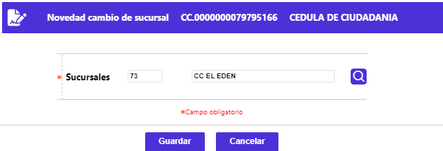

Cambio sucursal
La funcionalidad de este formulario invocada desde la opción Generación de novedades débito, permite modificar el dato de la sucursal en la que se solicitó la tarjeta débito del cliente. Luego de diligenciado el único dato requerido, mediante el botón Guardar, el sistema realiza las validaciones a que haya lugar y aplica la novedad.

Descripción de campos
Novedad |
Al desplegarse el formulario, por defecto trae el código y nombre de la sucursal actual del plástico, es un campo obligatorio, en el que se puede ingresar o seleccionar de la lista de valores poblada en la opción Estructura orgánica, la nueva sucursal a la que quedaría vinculada la tarjeta débito. |